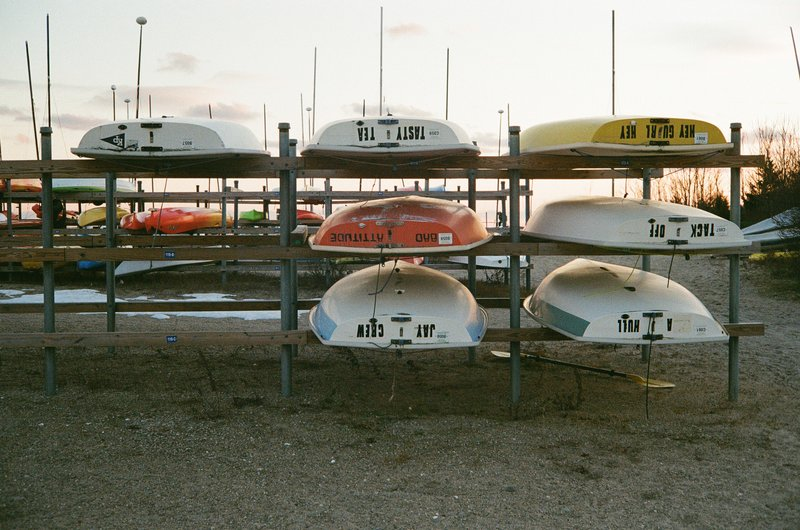
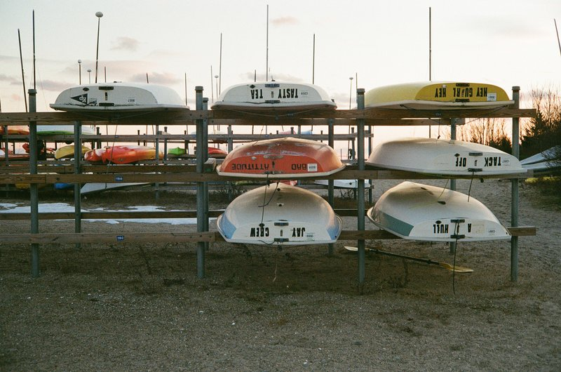
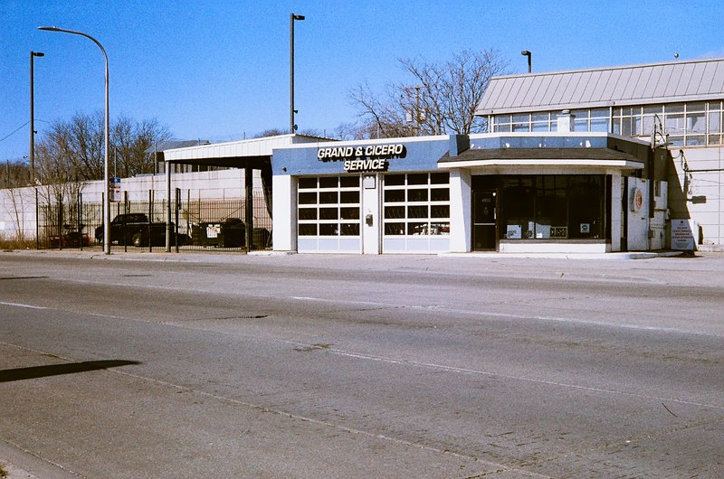
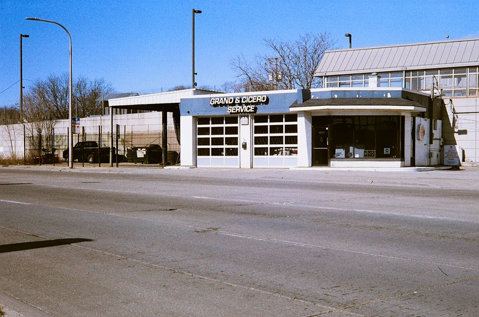

My first film camera wasn’t a Brownie or Leica. It was a hand-me-down from my grandpa: a Konica Auto S2 rangefinder. It had been sitting in a closet longer than I had been alive, but it was still in (relavtively) great condition.
The Auto S2 is a simple camera. It's entirely manual controlled, with the shutter speed, aperature, and focus right there on the lens. It even has a self timer and sync port for flash capabilities.
Having everything I could possibly need from a camera in a surprisingly sleek, strudy, and fairly portable package, the Auto S2 quickly found its home in my bag almost every day. And so it proved itself capable of handling woodland hikes and fishing trips, cold chicago winters, and many many skate sessions. It's nearly indestructible unless you literally land on it skating. (Ask me how I know.)
Even then, they’re cheap enough (~$100) to replace. I still have two copies floating around, which says everything about how reliable these things are.
The sleeper in this whole setup? That Hexanon 45mm f/1.8 lens.
People sleep on Konica glass. For real. Don't. This thing punches way above its weight. The leaf shutter tops out at 1/500, with flash sync at any speed. It's plenty fast, and it’s whisper-quiet too. Cliché, I know, but the bokeh is beautiful. And it's still surprisingly sharp wide open. It's got contrast for days and just enough character to remind you you’re shooting film.
This isn't just my first analog camera. It’s one I still consistently shoot with and it's one that still makes photos I’m proud of. The Auto S2 will always have a place in my collection. It's not a Ferrari by any means, just that stick-shift Toyota that refuses to die.
Best first film camera. Thanks, Grandpa Mel.
Sampled images below:
 


 
